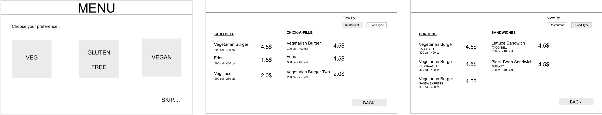
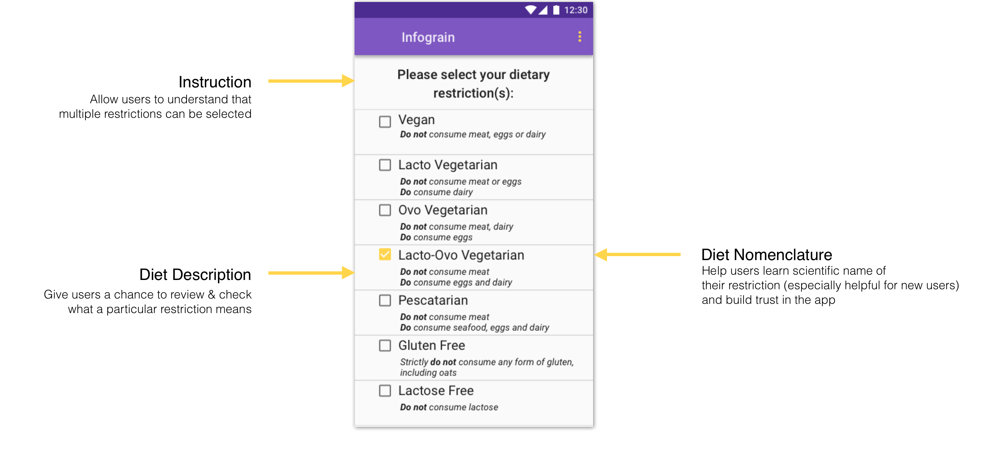

Overview
Problem Space
Even
though there are so many people who have some dietary restriction or the other, they have
been
neglected for long and don't have a medium to find dishes that fit their dietary restrictions.
In
the end, they pick the safest option on the list, which mostly is a "Veg Salad". The aim of this
project is to
help these users find meals at a restaurant that fit their dietary restrictions.
Click here to view
the presentation
Solution
A mobile app that shows list of restaurants compatible with users dietary restrictions sorted (by default) on customized score for each restaurant. This customized score is based on other users reviews and ratings as well as dishes at a restaurant that fit users dietary restrictions.
My Role
- Conducted contextual inquiry and interviews sessions
- Designed the survey
- Took part in affinity diagramming session
- Created low-fidelity and mid-fidelity screens
- Created interactive prototypein Invision
- Created evaluation plan
- Conducted usability testing sessions and feedback sessions
- Created project website
Timeline
Aug 2017 - Dec 2017
Team
Ishaani
Agrim Chandra
Brianna Pritchett
Hue Watson
Go to top of this section
Process

Go to top of this section
Research
Our initial goal was to understand issues students face while grocery shopping but our initial interviews and observations led us to pivot to a more pressing need - inability to find restaurants to accommodate their dietary restrictions.
Research Questions
1
What role does experience with the dietary restriction play in their process?
2
What is the user process while deciding on a meal to eat out?
3
What kind of influence do outside factors play in their decision making process?
We deployed the following research methods to answer the above research questions.
Observations
Observed purchasing process in gluten-free section of the store
Interviews
10 interviews to understand in-depth the issues faced by users
Contextual Inquiry
4 contextual inquiry - 3 grocery shopping, 1 restaurant eating experience
Surveys
40+ respondents. Questions based on insights gained from other methods.

Go to top of this section
Analysis
In this phase, we transformed our research into user needs, behaviors and pain points. We found user needs through affinity mapping and task analysis and identified user pain points. These needs saw a few emerging behaviors amongst users, which were represented using Personas. These behaviors were categorized into groups of Vikkis, Vishnus and Graces. We then generated storyboards and customer journey maps to aid design decisions.
User Pain Points
1
Issues understanding different ingredients due to unfamiliarity or scientific terms being used
2
Social stigma faced due to feeling of being looked down upon because of dietary restriction
3
Language barrier due to environmental factors like noise or difficulty with the language

{kind=link}
User Behavior
Through careful analysis of our research, we identified behaviorial
differences between users. These differences were mainly based on age, familiarity of the area,
language
barriers, reasons for having dietary restrictions, time since dietary restriction and their
goals.
These personas went through different emotional journey through their process of ordering food which
we
represented using customer journey maps. Customer journey maps helped us set expectations within
the team and a
final
emotional state that we wanted to aim.


Go to top of this section
Ideation & Design
Ideas were organized on a 2D map and were rated based on how well these designs matched the usability criteria set forth in our affinity diagram - low cost, discreet, responsive and quick to use, and clearly able to label ingredients (and how creative we thought they were). After going through this process, we picked three ideas with the highest ratings – “QR”, “AR”, and “kiosk”.


Idea 1: QR APP
An outdoor restaurant signboard system that uses QR codes so that a user could scan the code with their phone and get an instant rating of their compatibility with that restaurant's menu.

Idea 2: AR APP
An AR APP that allows a user to scan the menu with their phone. The app would then provides information based on the menu items and the user's restrictions.

Idea 3: Kiosk
A Kiosk placed in a public setting around several restaurants. Where a user would be able to choose a meal from all compatible available options nearby them through the kiosk.
{kind=link}
STORYBOARDS
We created storyboards to fit these three ideas in different context as per our personas. This helped us validate that our ideas were relevant to the personas and helped us communicate our ideas across to the users to get feedback on these three ideas.

FEEDBACK
To decide on which idea to go by, we conducted feedback sessions to understand
- Pros and cons of each idea to explore the opportunity to get feature-level feedback to
combine
ideas later on
- Willingness of the user to create a profile on the app and provide personal information
- Any scenario in which user's naturally thought of using this app to cover use cases, the
team
might have missed
FEEDBACK RESULT
1
Users wanted fine-grained distinction about their dietary restriction as being a vegetarian meant different things to different users
2
Neutral to negative about creating profile. Users didn't want to share their personal details in order to use the app
3
People bring a lot of expectations from Yelp. Users wanted reviews to be on our app and said they would visit Yelp to look at reviews since our app didn't have any
4
Negative feelings towards using QR. Users felt that it was an overhead to use QR code
5
Hesitant about using AR. Users said that they weren't comfortable using AR functionality in public
6
Users imagine using it in a group setting. Users spoke about scenarios where they would use the app while going out in a group
FEATURE LEVEL DECISION
After the feedback session, we decided to take feature level decision as we didn't want to discard features just because people did not like how the way feature was presented.

Map
Rating notification
GPS
Refining Restrictions
Score include reviews
Score include no. of dishes
Menu Toggle
Menu Category
Menu Legends

Kiosk
AR
QR
Reviews for user's restriction
Score per menu dish item
Profile
EXPERT FEEDBACK
We created mid-fidelity prototype without adding colors and asked an expert to review our system. We got two main takeaways from this session.

TAKEAWAY 1: The expert had issue understanding what the restrictions meant in the previous version. They didn't understand the sub-categories provided in the mockup on the left of the image. Hence, we decided to remove sub-levels and show the restrictions at all same heirarchial level.
TAKEAWAY 2: The expert didn't understand what the legends meant. When they opened one of the collapsed categories, they understood what the legends meant. Hence, we decided to provide more instructions to make the legend clear and have one menu category open by default.

HI-FI MOCKUPS
Restrictions Selection
{kind=link}
Map View
{kind=link}
Restaurant View
{kind=link}
Reviews
{kind=link}
Rating
{kind=link}
Interactive Prototype
Go to top of this section
Evaluation
TASKS
"Pick a restaurant in this area"
Scenario: You only have the maps view available to you and you cannot
drill down
and click on the restaurant to view their menu.
"Pick a dish from a given restaurant."
Scenario: You are going with a friend who does not have any dietary restriction and
you
need to pick a dish for them as well.
DESIGN IMPLICATIONS FROM THINK ALOUD
1
Simplify explanation accompanying the name of the dietary restriction by making use of icons and symbols
2
Add three legendsto differentiate between compatible and incompatible dishes
3
Add filters within the sorting options to specify a range for sorting parameters setting
4
Add legend in front of menu items which do not fit dietary restriction.
5